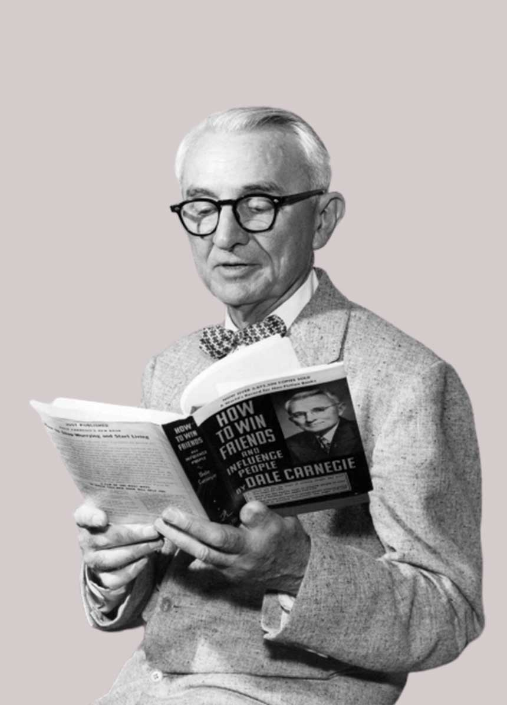

Memory on 2020This is my flashback in 2020 when I was one of the students of SMK Batu Lapan. This picture was taken for our school magazine and these are my friends and my teacher. |
Memory on 2023This picture was taken around November 2023 when we decided to do some photoshoots and videos to promote the jersey we are wearing as in the picture. I am very happy that we managed to sit and take a picture together and I will never forget this memory. |
Memory on 2015This picture was taken when my family gathered at my aunt's house in Kulim. It feels like we are celebrating Eid Mubarak at that time. This is also my best memory of my life and this picture has many memories as time goes by. |
“When you give joy to other people, you get more joy in return. You should give a good thought to happiness that you can give out.”
“Develop success from failures. Discouragement and failure are two of the surest stepping stones to success.”